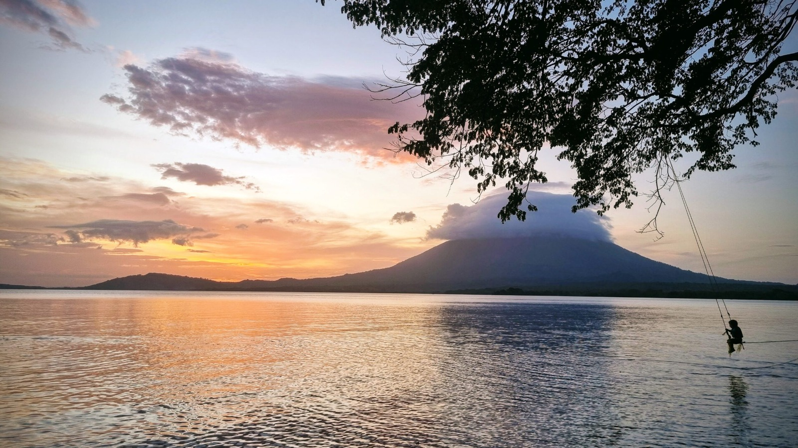
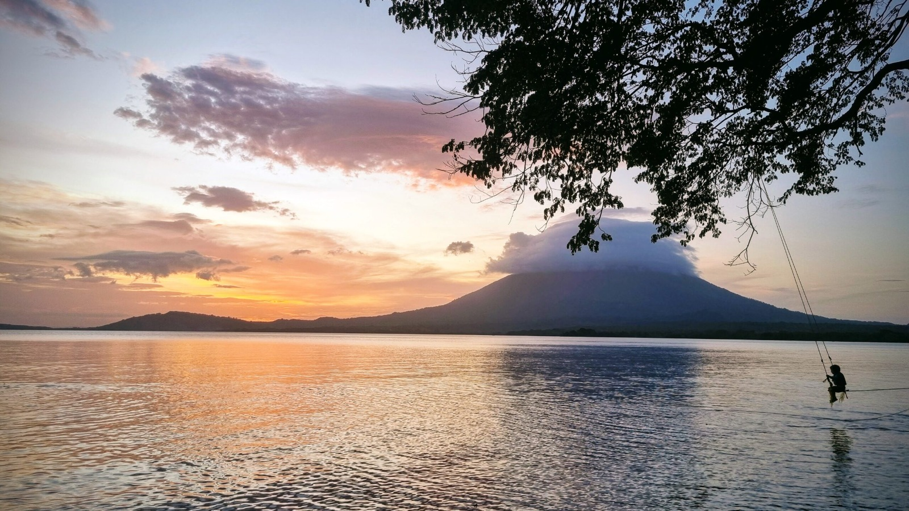

Welcome to Ometepe Island
Two volcanoes, one paradise. Discover its natural and cultural wonders.
 


Ferries: Moyogalpa - San Jorge
Fun Fact: Ometepe Island is the only island in the world with two volcanoes within the same freshwater lake.
Hotels and Restaurants
Accommodation
From budget hostels to luxury eco-lodges, find the perfect place to relax after your adventure.
Local Cuisine
Try the fresh fried fish, "vigorón," and other delicious traditional Nicaraguan dishes.
Vehicle and Motorcycle Rentals
Motorbikes (Recommended)
Perfect to explore every corner of Ometepe. Make sure to have a valid license.
Contact: Rentas "El Veloz" | Tel: 5797-3164
Cars (4x4 Suggested)
Ideal for large groups or extra comfort, especially during the rainy season.
Contact: Ometepe Car Rental | info@rentaometepe.com
Ferries: Moyogalpa - San Jorge
Booking and Boarding Process
- Arrive at the San Jorge or Moyogalpa port one hour before departure.
- Buy tickets at the counter (passengers or vehicles).
- Present your registration and license if traveling with a vehicle.
- Boarding: vehicles first, then passengers.
- Duration: between 1h and 1h 30m.
TIP: Schedules may change. Check the information board at the port.
Must-See Attractions
Ojo de Agua
A natural pool fed by volcanic springs, perfect for a refreshing swim.

San Ramón Waterfall
A 3 km trail leads to this impressive 50-meter waterfall.
Punta Jesús María
A narrow sand isthmus offering breathtaking views of the volcanoes.

Charco Verde Reserve
An emerald lagoon ideal for spotting monkeys, birds, and enjoying nature.
Geographic Location of Ometepe
Contact Us
Contact Information
Phone: +505 5821-5395
Email: info@dosvolcanes.com
Address: Moyogalpa, Ometepe Island